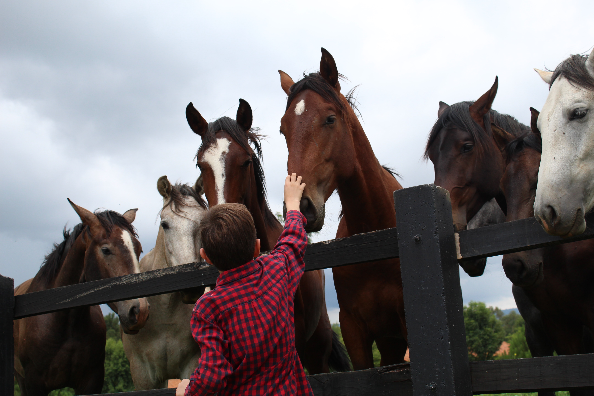
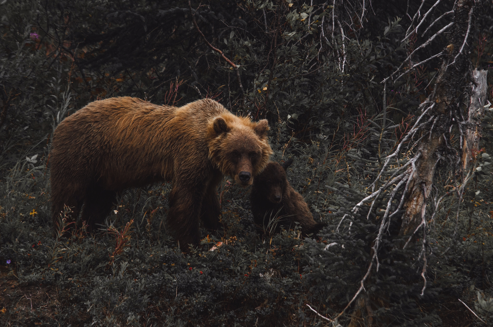

The domestic dog (Canis familiaris or Canis lupus familiaris)[5] is a domesticated form of wolf. The dog descended from an ancient, extinct wolf,[6][7] with the modern wolf being the dog's nearest living relative.[8] The dog was the first species to be domesticated[9][8] by hunter–gatherers more than 15,000 years ago,[7] prior to the development of agriculture
Learn moreThe horse (Equus ferus caballus)[2][3] is a domesticated odd-toed ungulate mammal. It belongs to the taxonomic family Equidae and is one of two extant subspecies of Equus ferus. The horse has evolved over the past 45 to 55 million years from a small multi-toed creature, Eohippus, into the large, single-toed animal of today.
Learn moreBears are carnivoran mammals of the family Ursidae. They are classified as caniforms, or doglike carnivorans. Although only eight species of bears are extant, they are widespread, appearing in a wide variety of habitats throughout the Northern Hemisphere and partially in the Southern Hemisphere. Bears are found on the continents of North America, South America, Europe, and Asia. Common characteristics of modern bears include large bodies with stocky legs, long snouts, small rounded ears, shaggy hair, plantigrade paws with five nonretractile claws, and short tails.
Learn more